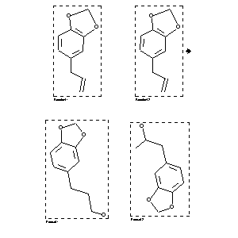

|  |
| FA | RX(1); FLST(1); RX(1) |
Reaction (1 of 1)
| Reaction ID | 1767861 |
| Reactant BRN | 136380 |
| Reactant | 5-allyl-benzo[1,3]dioxole |
| Product BRN | 150253; 150198 |
| Product | 3-benzo[1,3]dioxol-5-yl-propan-1-ol; 1-benzo[1,3]dioxol-5-yl-propan-2-ol |
| No. of Reaction Details | 1 |
Reaction Details (1 of 1)
| Reaction Classification | Preparation |
| Reagent | 1.) BH3, 2.) sodium perborate |
| Other Conditions | 1.) THF, from 0 deg C to RT, 2 h, 2.) H2O, 25 deg C, 2 h |
| Comment | Yield given. Multistep reaction. Yields of byproduct given. Title compound not separated from byproducts |
| Citation Pointer | 5568961; Journal; Kabalka, George W.; Shoup, Timothy M.; Goudgaon, Naganna M.; JOCEAH; J.Org.Chem.; EN; 54; 25; 1989; 5930-5933; |
Reference (1 of 1)
| Citation Number | 5568961 |
| Document Type | Journal |
| Authors | Kabalka, George W.; Shoup, Timothy M.; Goudgaon, Naganna M. |
| CODEN | JOCEAH |
| Journal Title | J.Org.Chem. |
| Language Code | EN |
| (Series) Volume | 54 |
| Number | 25 |
| Publication Year | 1989 |
| Page | 5930-5933 |